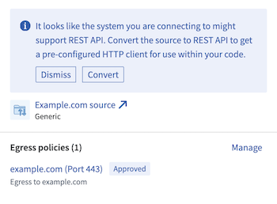

The generic connector can be used to represent connections to arbitrary external systems. As a connector, it does not directly support the standard set of capabilities available in other connectors. However, when used exclusively as a Use in code connector, it can be used to create code-based alternatives to these standard capabilities, including batch syncs, file and table exports, streaming syncs, streaming exports, media syncs, webhooks, and more.
By configuring the generic connector with the appropriate worker, credentials, and export controls, developers can use it to write code that connects to arbitrary external systems. When the source owner configures the networking, worker, credentials, and export controls together, they can ensure that credentials are only used with the specified external system, and export markings are enforced across the different code environments where connections are established.
| Capability | Status |
|---|---|
| Use in code | ð¢ Generally available |
The generic connector should be created from the New connection option in the side bar of code repository environments rather than through the Data Connection application. However, any configured generic connector will appear alongside other connectors in Data Connection.
Review our external transforms tutorial for more information on how to set up a generic connector directly from a code repository.
Since the generic connector must be used in code, only Foundry worker connections can be used, either with direct connection egress policies for systems that can accept inbound traffic from Palantir, or with agent proxy egress policies for systems that are in a private network that cannot accept inbound traffic from Palantir.
When using agent proxy egress policies, the agent must be able to reach the destination addresses, and the destination systems must be configured to allow connections from the agent. Learn more about agent networking.
Conceptually, you can think of a generic connector as a collection of networking configurations, credentials, and exportable markings that are intended to be used together.
To provide the above functionality, the following configuration options are available for the generic connector:
| Option | Required? | Description |
|---|---|---|
Networking |
Yes | A set of egress policies dictating what destination addresses or IPs should be reachable. |
Credentials |
No | A set of key value pairs may be used to store credentials. Currently, only secret values may be stored. Unencrypted values are not supported. |
Exportable control markings |
No | If the generic connector will be used along with Foundry data inputs, the setting to allow exports must be enabled and the set of exportable markings must be specified. For more information on export controls for data connections, refer to our documentation. |
This section provides additional information on how to use the generic connector from various code environments in Foundry.
| Code environment | Description |
|---|---|
| Python external transforms | Use the generic connector to connect to external systems from Python transforms repositories. |
| Compute modules | Use the generic connector to connect from long-running compute modules. Useful for streaming sync and export workflows, as well as bespoke writeback workflows. |
| TypeScript functions | Generally available. |
| Python functions | Generally available. |
A generic connector can be imported into a code repository. Using this generic connector, you can write code to reach out to external systems and access credentials on the source.
Learn more about source-based external transforms.
A generic connector can be imported into a compute module. Using this generic connector, you can write compute modules that interact with external systems.
A generic connector can be imported into a TypeScript Functions code repository. Using this generic connector, you can make direct calls to external systems using fetch.
A generic connector can be imported into a Python Functions code repository. Using this generic connector, you can make direct calls to external systems using Python's requests library.
Generic connectors can be converted to the REST API source if there is only a single egress policy attached to the source for a DNS address with port 443.
Performing this conversion would give developers access to a built-in HTTP client for usage in code, allowing developers to immediately write code that interacts with the external system.
